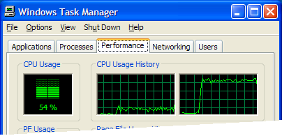

| CanvasGear → Demo1 Demo2 Demo3 Demo4 Demo5 Demo6 |
|
1 Overview 2 Features 2.1 Framework 2.2 Speedometer 2.3 Swarm 3 Algorithms 4 Performance
Slogan: CanvasGear is a script to draw animated canvases by just specifying some parameters in the HTML.
Project status : Proof-of-concept
Features :
Demo :
Installation :
<html> <head> ... <script src="./../canvasgear.js></script> <!-- (1) Load script --> ... </head> <body> <canvas <!-- (2) Put a canvas tag --> data-cvgr="algo=pulse color=hotpink hertz=0.197" <!-- (3) Put the data-cvgr attribute --> width="123" height="123" <!-- (4) Put width and height attribute --> id="myCanvas44"> <!-- (5) Put an ID attribute --> </canvas> </body> </html>
Compatibility : All recent browsers. Tested with Chrome 32, Edge 42, Firefox 30, IE 9 and Opera 36
CanvasGear sports the following features.
CanvasGear constitutes a small canvas drawing framework.
It is an abstraction layer for canvas management. CanvasGear provides the drawing control to the user via a simplified UI or API: a commandline inside a comment behind the canvas tag. This commandline specifies the algorithm to be used and its parameters.
To the developer of an animation, it provides an environment for an algorithm to run. So only the algorithm has to be written, and no more the peripheral mechanics.
CanvasGear provides browser independend timing.
CanvasGear observes the actual browser's frame rate and calculates the angle increment to achive 1 Hertz, means one turn per second.
This runtime-calculated increment can be used by the algorithms to maintain a well defined browser independend speed.
Example command: <!-- algo=pulse hertz=0.5 -->. This means a balloon which pulses one time every two seconds.
CanvasGear allows many canvases with different parameters on one page, e.g. index.html.
To draw many canvases on one page, just make sure they have different IDs, like the following do:
<canvas id="myCnv44" width="28" height="28"></canvas><!-- color=tomato hertz=0.1 --> <canvas id="myCnv55" width="32" height="32"></canvas><!-- color=turquoise hertz=0.2 --> <canvas id="myCnv66" width="36" height="36"></canvas><!-- color=#4169e1 hertz=0.3 --> <canvas id="myCnv77" width="44" height="44"></canvas><!-- algo=pulse hertz=1.4 -->
Having the parameters of the many canvases somehow correlated, can result in swarm appearance.
Developers note. This feature is a good candidate to apply the Flywight Pattern. With normal objects per canvas, the browser may soon hit it's memory limit. The Flywithg pattern is a mechanism to save memory per object.
This are the algorithms provided so far :
algoritm function description
------------ -------------------------------------- ---------------------------------------------
• Ballist Cvgr.Algos.Ballist.executeAlgorithm This draws a shooting target with hits, also
intended for geological structure diagrams
• develop Cvgr.Algos.develop.executeAlgorithm Temporary algorithm for development
• oblongrose Cvgr.Algos.oblongrose.executeAlgorithm This draws a rose from rectangles
• pulse Cvgr.Algos.pulse.executeAlgorithm This draws a pulsing balloon
• Template Cvgr.Algos.Template.executeAlgorithm The graphics in script canvasgear.Template.js
• triangle Cvgr.Algos.triangle.executeAlgorithm This draws a triangle
• triangulum Cvgr.Algos.triangulum.executeAlgorithm This draws a swinging triangle
For how to add more algorithms, see the Algorithm Interface.
CanvasGear provides an interface for easy addition of new algorithms. For details see the sourcecode, notably file canvasgear.Template.js.
Using canvases, you can easily hit the limit, where the browser is overwhelmed. This is true for old as well as new browsers. Just increase the number of icons per page, and at some point the icons start jerking.
To deal with this limit, the limit first must be known. So observing the machine resources is natural.

The CPU utilization while Firefox (in 2014) displays a simple page first,
and then switches to page
CanvasGear Demo Two with more than 81 canvases.
This diagram tells that canvas drawing is resource intensive.
CanvasGear provides a debug output field which tells the current frame rate and other runtime information to observe browser behaviour quantitatively.
Here are some rough observations (in 2014):
To increase performance, a lot can be done by purposefull coding. E.g. there may be found superfluos processes, which can be optimized away. This is less a feature, more a refacturing issue.
.
Some obsolete material is archived in the Attic page.
eof